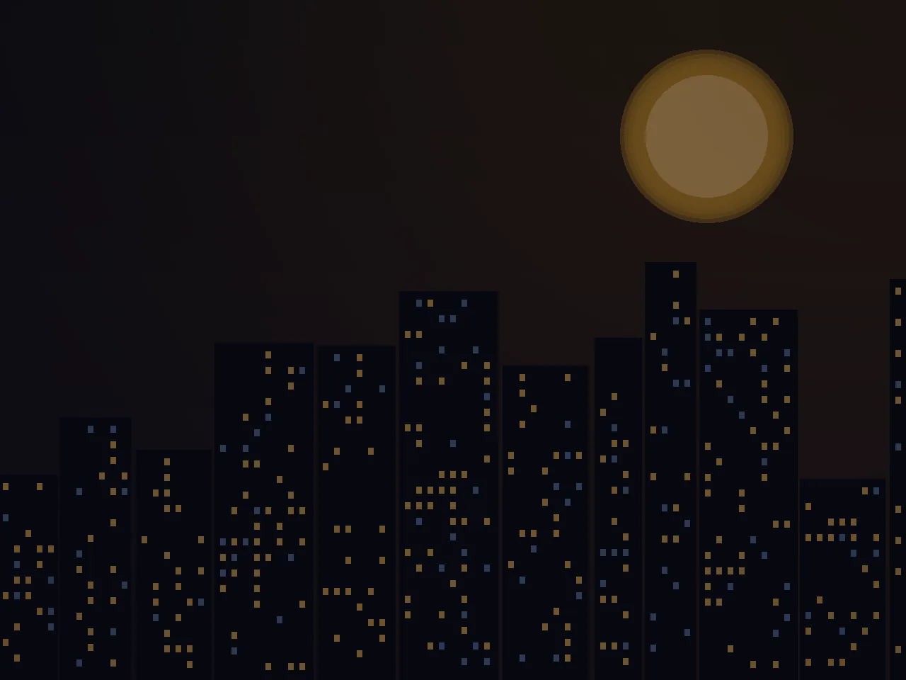
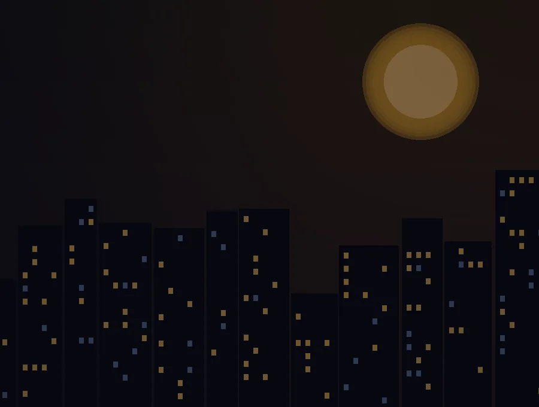

İhtiyacını paylaş
Arayarak ya da WhatsApp'tan yazarak almak istediğin günlük market ürünlerini ilet.
Market alışverişini uzatmaya gerek yok. Su, alkolsüz içecek, atıştırmalık ve günlük ihtiyaçlar için bizi ara ya da WhatsApp'tan ulaş. Ürün ve teslimat detaylarını birlikte netleştirelim.

Sepet oluşturmak veya hesap açmak zorunda değilsin.
Arayarak ya da WhatsApp'tan yazarak almak istediğin günlük market ürünlerini ilet.
Ürün bulunurluğunu, teslimat adresini ve sipariş koşullarını birlikte kontrol edelim.
Uygun siparişleri hazırlayalım. Teslimat zamanını adrese ve yoğunluğa göre paylaşalım.
Ürün çeşitleri ve stok durumu için doğrudan iletişime geçebilirsin.
Su, soda, gazoz ve meyve suyu
Cips, bisküvi, çikolata ve kuruyemiş
Kahvaltılık ve günlük mutfak ürünleri
Ev temizliği ve hijyen ihtiyaçları
Günlük kişisel bakım ürünleri
İlçeni seçerek bölgeye özel bilgi sayfamıza ulaşabilirsin. Teslimat uygunluğu adresine göre teyit edilir.
Buca'da günlük ihtiyaçlar için arayabilir ya da WhatsApp'tan yazabilirsin.
Sayfayı incele ↗ÖNE ÇIKAN BÖLGEGaziemir'de ürün ve teslimat bilgisi için iletişime geç.
Sayfayı incele ↗GÜNÜN HER SAATİGece ihtiyaçların için market sipariş iletişimini kolaylaştır.
Sayfayı incele ↗Gece açık market aramalarında asıl önemli olan aradığın ürünü bulmak ve adresine servis olup olmadığını öğrenmek. 724 Açık Market, İzmir'de bu görüşmeyi telefon veya WhatsApp üzerinden kolaylaştırır.
Gece açık market sayfası →
Arayabilir veya WhatsApp üzerinden ürün listenizi ve teslimat adresinizi iletebilirsiniz. Ürün bulunurluğu, teslimat ve ödeme detaylarını görüşerek netleştiririz.
Hayır. Bu web sitesi çevrimiçi ödeme veya sepet sistemi içermez. Sipariş iletişimi telefon ve WhatsApp üzerinden gerçekleşir.
724 Açık Market, gece dahil günün her saati iletişim kanallarından talepleri karşılamak üzere hizmet verir. Teslimat uygunluğu adres ve yoğunluğa göre değişebilir.
Süre; adresinize, siparişin içeriğine ve o andaki yoğunluğa bağlıdır. Net teslimat bilgisi sipariş sırasında paylaşılır.
İzmir'de açık market, Buca açık market veya Gaziemir market servisi arıyorsan tek bir arama ya da mesajla başla.
+90 532 364 95 23